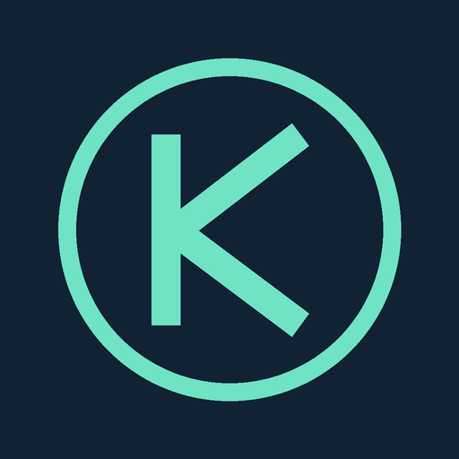

Verified rare answers for the daily dive.
Tap + on the helper to expand it. You can edit any filled answer. Krillion itself submits filled answers when the timer expires.
Daily dive only. No subscription or API key. On older iOS versions, Safari is directly in Settings.